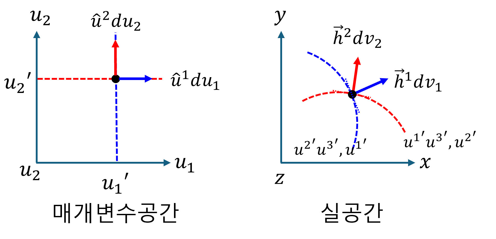

(a) Covariant and contravariant
이전 챕터에서는 매개변수공간(데카르트 좌표계로 간주)에서 단위 기저 벡터에 대해서 다루었다. 그러나 모든 기저가 직교하지 않을 수도 있으며, 그 크기가 1이 아닐 수도 있다.
여기에서는 실공간의 일반 좌표계에서 기하학적 텐서를 표현하는 새로운 방식을 소개한다. orthogonal coordinates 에 대한 기본적인 이해가 있다면 학습에 도움이 될 것이다
1. 벡터의 표현
일반 좌표계에서 벡터의 “좌표값"은 벡터를 해당 좌표축 벡터의 방향으로 평행하게 분해했을 때의 각 축에 대한 스케일링 계수 이다. suffix notation을 사용하여, 일반좌표계에서 벡터표현은 다음과 같다.
$$ \vec{x}=x^{i}\vec{g}_i=x_i\vec{g}^i $$- $\vec{g}_i$는 자연 기저 벡터 (natural base vectors) 라고 한다. 또는 공변기저벡터 라고 한다.
- $x^i$ 는 성분을 나타내며, 이것을 $\vec{x}$ 의 contravariant(반변) 성분이라고 한다.
- $\vec{g}^i$는 역 기저 벡터 (reciprocal base vectors) 라고 한다. 또는 반변기저벡터 라고 한다.
- $x_i$ 는 성분을 나타내며, 이것을 $\vec{x}$ 의 covariant(공변) 성분이라고 한다.
2. 공변기저벡터
매개변수 공간($q$)에서 실공간으로의 매핑
데카르트 좌표계처럼 다룰 수 있는 매개변수 공간의 미소변위벡터($d\vec{q}$)는 아래와 같이 표현할 수 있다. 여기에서, $\hat{q}_j$가 $\hat{e}_k$ 와 같은 물리적 공간의 벡터가 아니라, 매개변수 공간 내에서 $q^j$ 축 방향의 단위 변화를 나타내는 추상적인 기저 벡터 이다.
$$ d\vec{q}=dq^j\hat{q}_j $$이제, $d\vec{q}$를 실공간의 벡터 $d\vec{x}$로 mapping 한다.
$$ d\vec{x} =(d\vec{q}\cdot\nabla)\vec{x} =dq^j\partial_j\vec{x} $$여기에서의 $\vec{x}$는 매개변수공간의 위치벡터 $\vec{q}$ 가 실공간으로 매핑되었을 때, 실공간의 위치벡터를 의미한다.
$$ \vec{x} =x^k(q^1,q^2,q^3)\hat{e}_k $$실공간의 위치벡터 $\vec{x}$를 대입하면,
$$ d\vec{x} =dq^j\partial_jx^k\hat{e}_k =dq^j\frac{\partial x^k}{\partial q^j}\hat{e}_k $$처음과 윗 식을 비교해보자. 매핑 관점에서, 매개변수 공간의 단위 벡터 $\hat{q}_j$ 가 실공간의 $\partial x^k/\partial q^j\hat{e}_k$ 로 매핑됨을 확인할 수 있다. 여기에서, $\partial x^k/\partial q^j\hat{e}_k$를 공변기저벡터라고 한다. 공변기저벡터의 기하학적 의미를 살펴보자. 위의 수식에서 매개변수 $q$가 변함에 따라, 실공간에서 궤적을 만들며, 이 궤적의 접선벡터가 공변기저 벡터임을 알 수 있다.
$$ \hat{q}_j\to \vec{g}_j=\frac{\partial x^k}{\partial q^j}\hat{e}_k $$$q$ 좌표계에서 $d\vec{x}$를 표현하기 위함이다. 다만, $q$ 좌표계의 기저를 우리가 익숙한 $\hat{e}_k$ (데카르트 기저)를 통해 ‘설명’ 하고 싶다. 따라서, 변환 텐서를 사용하여 데카르트 기저로 표현해 보자.
$$ d\vec{x} =dq^j\vec{g}_j =dq^jg_j^k\hat{e}_k $$$$ g^k_j =\frac{\partial x^k}{\partial q^j} $$3. 역(반변)기저벡터
공변기저벡터의 경우, 매개변수공간의 (추상적인) 단위 기저벡터를 실공간으로 mapping된 궤적의 접선벡터라고 하였다. 이번에는 매개변수공간의 단위기저벡터를 등위면의 법선벡터라고 정의하자. 그러면, 실공간으로 mapping 하였을 때, mapping된 등위면이 생기며, 이 등위면의 법선 벡터를 반변기저벡터라고 한다.
실공간에서 매개변수 공간($q$)으로의 매핑
실공간의 미소변위벡터 $d\vec{x}$를 매개변수공간의 $q^i$로 mapping 해 보자. 여기에서, 매개변수 공간의 (추상적) 단위 기저 벡터는 이미 알고 있기에 구하는 의미가 없다. 매개변수공간으로 mapping 된 각 단위 벡터의 성분은 아래와 같이 구할 수 있다.
$$ dq^i =d\vec{x}\cdot\nabla q^i =dx^j\partial_jq^i $$여기에서, $\vec{g}^i=\nabla q^i$를 반변기저벡터 라고 한다. mapping 으로의 의미를 생각해보자. $\vec{g}^i\cdot$ 는 매개변수공간의 성분(스칼라)으로 변환하는 연산자 이다. 이것을 쌍대공간의 기저라고 볼 수 있다. 따라서, 아래와 같이 쓸 수 있다.
$$ dq^i =d\vec{x}\cdot \vec{g}^i $$$q$ 좌표계에서 $d\vec{x}$를 표현하기 위함이다. 다만, $q$ 좌표계의 반변 기저를 우리가 익숙한 $\hat{e}_k$ (데카르트 기저)를 통해 ‘설명’ 하고 싶다. 따라서, 변환 텐서를 사용하여 데카르트 기저로 표현해 보자.
$$ d\vec{x} =dq_j\vec{g}^j =dq_jg_k^j\hat{e}_k $$$$ g_k^j =\frac{\partial q^j}{\partial x^k} $$4. 왜 ‘공변(Covariant)‘이고 ‘반변(Contravariant)‘인가
(1) 공변 기저 벡터 ($\vec{g}_i$)와 반변 성분 ($q^i$)
-
공변 기저 벡터 ($\vec{g}_i$):
- 매개변수 축($q^i$)을 따라 실공간의 벡터 궤적에 접선으로 놓인다.
- 매개변수 축이 늘어나면, $\vec{g}_i$도 실공간에서 그 늘어난 축을 따라 ‘함께’ 길어진다.
- 이처럼 좌표계 변화에 ‘함께(co-vary)’ 반응하는 특성 때문에 ‘공변’ 기저 벡터라고 불린다.
-
반변 성분 ($q^i$):
- 벡터 $\vec{x}$의 값을 일정하게 유지하기 위해, 공변 기저 벡터($\vec{g}_i$)의 변화와 ‘반대’ 방향으로 변하는 성분이다.
- 예를 들어, $\vec{g}_i$가 길어지면, $q^i$는 상대적으로 작아져야 총 벡터의 크기가 유지된다. 기저와 성분의 변화 방향이 반대되기 때문에 ‘반변’ 성분이라고 불린다.
(2) 반변 기저 벡터 ($\vec{g}^i$)와 공변 성분 ($q_i$)
-
반변 기저 벡터 ($\vec{g}^i$):
- 매개변수 $q^i$의 등위면(level surface)에 수직인 법선 벡터이다.
- 매개변수 축($q^i$)이 늘어나서 등위면들이 실공간에서 더 넓게 퍼지면(덜 촘촘해지면), $\vec{g}^i$의 크기는 ‘짧아진다.’
- 반대로 매개변수 축이 압축되어 등위면들이 더 촘촘하게 모이면, $\vec{g}^i$의 크기는 ‘길어진다.’
- 이처럼 매개변수 축의 변화 방향과 ‘반대’되는 경향으로 길이가 변하므로 ‘반변’ 기저 벡터라고 불린다. 또한 공변 기저($\vec{g}_i$)와 $\vec{g}_i \cdot \vec{g}^j = \delta_i^j$ 관계처럼 상보적이고 역수적인 관계를 가진다.
-
공변 성분 ($q_i$):
- 벡터 $\vec{q}$의 값을 일정하게 유지하기 위해, 반변 기저 벡터($\vec{g}^i$)의 변화와 ‘같은’ 방향으로 변하는 성분이다.
- $\vec{g}^i$가 길어지면(등위면이 촘촘해지면), $q_i$도 커져야 총 벡터의 크기가 유지된다. 기저와 성분의 변화 방향이 같기 때문에 ‘공변’ 성분이라고 불린다.
5. 공변기저벡터와 반변기저벡터의 내적: 쌍대성
$$ \vec{g}_i\cdot\vec{g}^j =\langle g_i|g^j\rangle =\delta_i^j $$proof)
$$ \langle g_i|g^j\rangle =\frac{\partial x^k}{\partial q^i}\hat{e}_k\cdot \frac{\partial q^j}{\partial x^l}\hat{e}_l =\frac{\partial x^k}{\partial q^i} \frac{\partial q^j}{\partial x^l}\delta_{kl} =\frac{\partial x^l}{\partial q^i} \frac{\partial q^j}{\partial x^l} =\frac{\partial q^j}{\partial q^i} =\delta_i^j $$6. 공변기저벡터와 반변기저벡터의 dyad: 단위 tensor
$$ \bar{\bar{I}} =\vec{g}_i\vec{g}^i =|g^i\rangle\langle g_i| $$proof)
$$ \langle g_i|g^j\rangle\langle g_j|g^i\rangle =\delta_i^j\delta^i_j =\delta_i^i =1 $$따라서,
$$ |g^j\rangle\langle g_j| =\bar{\bar{I}} $$7. 공변, 반변 성분 추출

(1) 반변성분추출
$$ \vec{x}\cdot\vec{g}^i=x^i $$proof)
$$ \vec{x}\cdot\vec{g}^i =x^k\vec{g}_k\cdot\vec{g}^i =x^k\delta^i_k =x^i $$(2) 공변성분추출
$$ \vec{x}\cdot\vec{g}_i=x_i $$proof)
$$ \vec{x}\cdot\vec{g}^i =x_k\vec{g}^k\cdot\vec{g}_i =x_k\delta^k_i =x_i $$